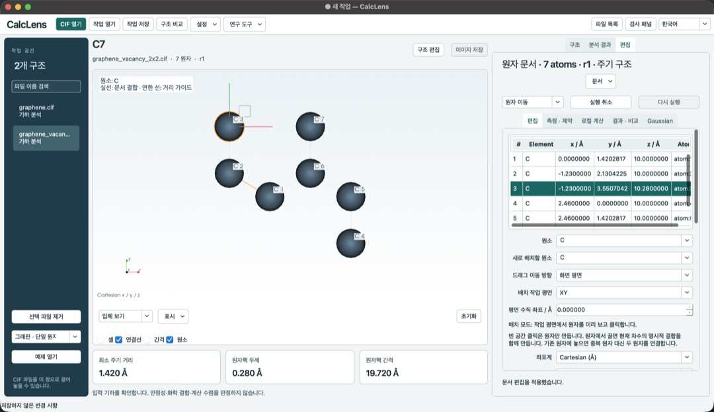
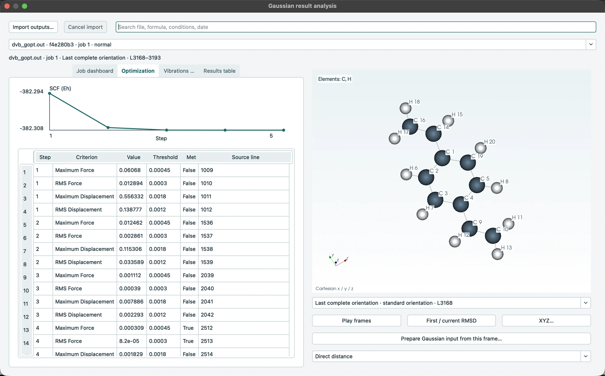

CIF 구조와 주기 거리
CIF를 열어 셀을 반복하고 원자를 선택해 거리·각도·이면각을 측정합니다. 짧은 주기 거리의 이웃 셀과 이동값, 층 두께와 간격도 확인할 수 있습니다.
CalcLens는 CIF 결정 구조, 분자 편집, Gaussian 결과 검토를 한곳에서 이어가는 데스크톱 앱입니다.
CIF에서 짧은 원자 간 거리를 발견하면 어느 원자를 골랐는지, 이웃 셀의 이미지인지 알아야 그 값을 해석할 수 있습니다. Gaussian 계산에서도 에너지 한 줄이 어느 구조에 해당하는지 찾아야 합니다.
CalcLens는 원자 선택, 좌표, 원본 결과 행을 함께 보여줍니다. 프로젝트를 다시 열면 그때 확인한 구조와 계산 조건을 이어서 볼 수 있습니다.
Mac과 Windows의 0.13.1을 기준으로 소개합니다. 두 운영체제에서 역장 계산을 지원하며, 추가 계산 엔진은 Mac에서 제공됩니다.
CIF를 열어 셀을 반복하고 원자를 선택해 거리·각도·이면각을 측정합니다. 짧은 주기 거리의 이웃 셀과 이동값, 층 두께와 간격도 확인할 수 있습니다.
구조별 조건과 메모를 저장하고 작업을 다시 엽니다. 두 구조의 원자 대응을 확인한 뒤 분자 RMSD 또는 같은 셀의 주기 변위를 비교할 수 있습니다.
출력의 최적화 단계, SCF 에너지, 진동 모드와 IR 세기를 확인합니다. 선택한 결과의 원본 행과 좌표를 살펴보고 그 구조로 후속 입력을 만듭니다.
전하·다중도와 계산 조건을 지정해 입력과 작업 폴더를 준비합니다. SSH 프로필과 연구실 실행 설정을 이용한 작업 제출·상태 확인을 지원합니다. Gaussian은 별도 서버에서 실행됩니다.
외부 전하 JSON과 Cube를 불러와 구조에 표시합니다. 지원하는 VASP CHGCAR의 첫 총밀도 블록에서 평면 평균과 누적 전자수도 확인할 수 있습니다.
구조와 밀도 프로파일을 PNG 또는 PDF로 저장합니다. 출력 그림에 원본과 표시 조건을 기록하고 결과 표를 CSV로 내보낼 수 있습니다.
CIF 구조와 분자를 검토하던 3D 화면에서 원자를 선택하고 이동하거나 추가합니다. 결합과 좌표를 편집하고 변경을 되돌릴 수 있습니다.
두 운영체제의 기본 설치에서 RDKit의 MMFF94s·UFF 역장으로 유한 분자를 계산합니다. Mac은 GFN2-xTB와 PySCF DFT도 제공합니다. 주기 구조는 선택한 원자로 유한 클러스터를 만든 뒤 계산하며, 주기 DFT와 GPU DFT는 지원 범위 밖입니다.
실제 연구실 Gaussian 서버 제출은 아직 검증하지 않았습니다. 계산 결과와 구조의 타당성은 입력과 계산 조건을 함께 검토해야 합니다.
각 화면을 누르면 원본 크기로 볼 수 있습니다.

0.13 개발 중 Mac에서 촬영한 화면입니다. 교육용 그래핀 결함 모델의 원자를 선택해 위치를 편집하고 있습니다. 이 모델은 실험 구조나 최적화 결과가 아닙니다.

공개 Gaussian 예제에서 SCF 변화와 힘·변위의 수렴 기준을 확인합니다. 프레임을 선택하면 해당 좌표와 원본 결과의 출처를 찾아갈 수 있습니다.
COD 9011577의 흑연 구조를 확장한 셀에서 가장 짧은 주기 거리는 1.42258 Å, 층 사이 핵 간격은 3.3555 Å입니다. 이 구조에서 따로 만든, 최적화하지 않은 단층 모델의 반복 높이는 20 Å로 설정했습니다. 위 화면의 교육용 그래핀 모델과는 별도 예제입니다.
cclib의 공개 디비닐벤젠 예제에서 최적화 3단계를 선택하면 CalcLens가 에너지의 원본 1857행을 가리킵니다. 그 좌표로 후속 입력을 만들고 프로젝트를 다시 열어 같은 프레임을 확인했습니다.
0.1.0부터 현재 공개판까지의 주요 변화를 정리했습니다. 0.1.0과 0.4.0은 별도 릴리스가 아닌 개발 버전입니다.
CIF의 원자 위치와 셀, 주기 거리 및 층의 기하 정보를 확인하는 도구로 시작했습니다.
한국어·영어 배포본과 사용 안내, CSV·JSON 결과 내보내기를 추가했습니다.
가장 가까운 원자쌍의 근거를 표시하고 여러 CIF를 비교하며 원본 정보를 기록했습니다.
검토 조건과 메모를 프로젝트에 저장하고 다시 여는 기능을 추가했습니다. Windows 실행 파일도 제공했습니다.
프로젝트 편집과 검토 이력, 선택 원자 거리, 두 구조 비교를 개발했습니다.
회전·확대와 셀 반복이 가능한 오프라인 3D 구조 작업공간을 도입했습니다.
구조 표시와 이미지 저장을 개선하고 외부 전하·전자 표면 자료를 불러오도록 했습니다.
전자 자료와 표시 설정을 프로젝트에 보관하고 지원 CIF의 P1 변환 미리보기를 추가했습니다.
선택한 구조와 검토 결과를 중심에 두도록 작업 화면을 새로 정리했습니다.
Windows와 Apple Silicon Mac용 데스크톱 앱을 선보이고 Gaussian 로그 검토를 지원했습니다.
저장된 밀도 차이의 계산 기록과 화면 설정을 보완하고 Windows 폴더형 배포를 제공했습니다.
Gaussian·VASP 출력 비교, Cube·CHGCAR 밀도 분석과 논문용 그림 내보내기를 추가했습니다.
거리·각도·이면각 측정과 Gaussian 입력 준비, 결과 프레임 검토 및 서버 작업을 확장했습니다.
Windows의 서버 로그인과 화면 상태 복원, 시작 화면 표시를 개선했습니다.
Mac에 분자 편집, 구조 저장, 조건별 에너지 비교와 유한 소분자 CPU 계산을 추가했습니다.
Mac과 Windows에 구조를 보면서 같은 3D 화면에서 편집하는 작업대를 제공하고 Windows 기본 설치에 RDKit 역장 계산을 추가했습니다. Mac은 GFN2-xTB와 PySCF DFT도 제공합니다.
Mac과 Windows 앱을 네이티브 모듈로 배포합니다. 초격자 생성, 3D 시점과 편집 모드 선택을 수정했고, Mac이 접근성 수정이 적용된 Qt 플러그인을 불러오도록 백업 위치를 바꿨습니다. 새 라이선스는 공식 설치 파일의 무료 공유를 허용합니다.
운영체제에 맞는 파일을 선택하세요. 첫 실행에서 설치를 선택하면 필요한 실행 환경을 내려받습니다.
Apple Silicon·macOS 15 이상용. DMG를 열어 앱을 응용 프로그램 폴더에 복사하세요.
DMG 받기 ↓Windows x64용. ZIP 전체를 푼 뒤 CalcLens.exe를 여세요.
기본 설치는 RDKit을 내려받아 UFF·MMFF94s 계산을 지원합니다. GFN2-xTB와 PySCF DFT는 Mac 기본 설치에서 제공됩니다.
ZIP 받기 ↓Mac 앱은 ad-hoc 서명이며 Apple 공증을 받지 않았습니다. Windows 실행기는 서명되지 않았습니다. 운영체제에서 경고를 표시할 수 있으니 배포처와 SHA-256을 확인하세요.
설치·라이선스 안내 · SHA-256 · 모든 릴리스 파일 · Mac Qt 플러그인 소스 · 배포 검증 결과